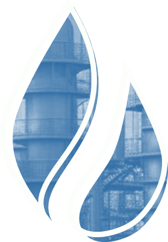

Подготовка нефти и газа к переработке
На главнуюИзучите материал о процессах подготовки нефти и газа к переработке, а также технологические установки и параметры технологического процесса. Чтобы перейти к учебному материалу, кликайте на блоки с текстом
Список рекомендованнойлитературы

- Воронкова, Л.Б. Ведение технологического процесса на установках I и II категорий: в 2-х ч. Ч.1: учебник / Л.Б. Воронкова, М.А. Руфанова.- Москва: Академия, 2017.- 224 с.
- Воронкова, Л.Б. Ведение технологического процесса на установках I и II категорий: в 2-х ч. Ч.2: учебник / Л.Б. Воронкова, А.А. Захарова.- Москва: Академия, 2017.- 288 с.
Основные электронные издания:
- Агибалова, Н. Н. Технология и установки переработки нефти и газа. Свойства нефти и нефтепродуктов / Н. Н. Агибалова. — Санкт-Петербург : Лань, 2020. — 124 с. — ISBN 978-5-8114-4285-0. — Текст : электронный // Лань : электронно-библиотечная система. — URL: https://e.lanbook.com/book/148251 — Режим доступа: для авториз. пользователей.
- Агибалова, Н. Н. Технология и установки переработки нефти и газа : учебное пособие / Н. Н. Агибалова. — Санкт-Петербург : Лань, 2020. — 308 с. — ISBN 978-5-8114-4213-3. — Текст : электронный // Лань : электронно-библиотечная система. — URL: https://e.lanbook.com/book/133886— Режим доступа: для авториз. пользователей.
- Лукманова, А. Л. Процессы и аппараты химической технологии. Примеры и задачи : учебное пособие для спо / А. Л. Лукманова. — 2-е изд., стер. — Санкт-Петербург : Лань, 2021. — 64 с. — ISBN 978-5-8114-7336-6. — Текст : электронный // Лань : электронно-библиотечная система. — URL: https://e.lanbook.com/book/158951 — Режим доступа: для авториз. пользователей.
- Пелевина, Л. Ф. Процессы и аппараты : учебник / Л. Ф. Пелевина, Н. И. Пилипенко. — 2-е изд., испр. — Санкт-Петербург : Лань, 2020. — 332 с. — ISBN 978-5-8114-4617-9. — Текст : электронный // Лань : электронно-библиотечная система. — URL: https://e.lanbook.com/book/131013 — Режим доступа: для авториз. пользователей.
- ГОСТЫ – [Электронный ресурс]. – Режим доступа: http://www.gosthelp.ru/